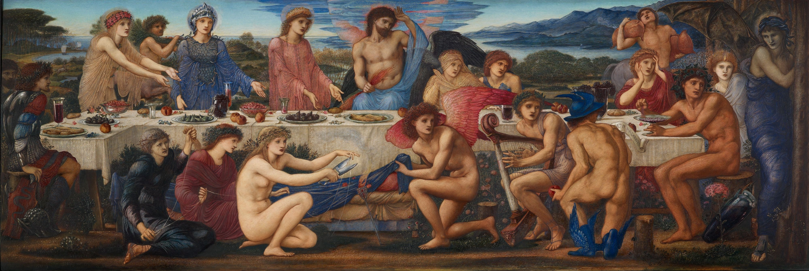
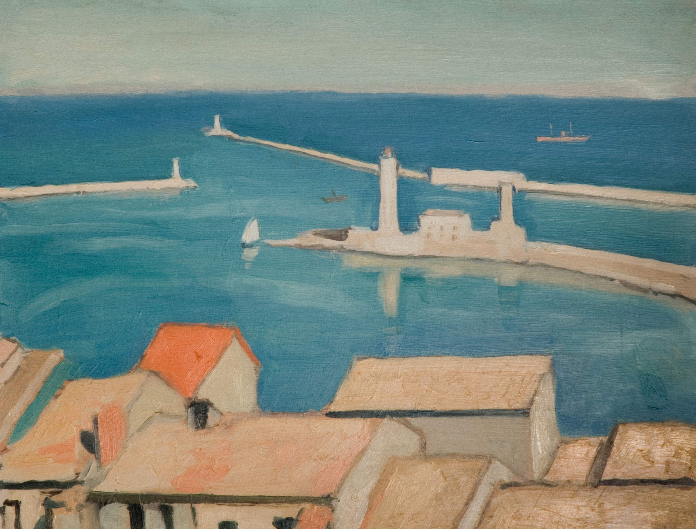

The celestial feuds and interactiosn between gods on Mount Olympus have fascinated historians, people who study literature, and philosophers alike. Each deity embodies the unique qualities that shape the cosmos, providing answers to early ponderers. Let's delve into the worlds of these ancient gods and goddesses, uncovering the myths that have fascinated humanity for milennia.
Zeus, King of the Gods
At the pinniacle of Mount Olympus stands Zeus, the thunderbold-weilding king of the gods. His authority extends over the heavens and the Earth, his presence commanding both fear and respect. His dad Cronus ate him and his siblings when they were fresh out of the womb. Zeus was the one who got everyone out so he proudly declared himself as the king of the gods as a child. He's also remembered as the enforcer of divine order. However, his romantic flings here and there with mortal women often create chaos. He's seen being depicted as both a charismatic ruler and passionate lover.
I think the Greeks depicted him this way to set a model for themselves. Zeus is like what everyone (man, at least) aspires to become. He's a babe magnet and also a really great ruler. He also spins chaos about with all his romantic relationships, an ode to masculinity and how power corrupts.
Hera, Queen of Heaven
Here exudes regality. She's both the sister and wife of Zeus, their union symbolizing the divine balance of power; chaos and order, masculine and feminine. She's the protector of marriage and family, ironically, as Zeus always cheats on her with other women. I think this is how women in Ancient Greece were portrayed. Perhaps they let their husbands cheat on them, acting out in jealous fits later on. They had no power. I think Hera, the queen of the heavens, embodies that. She's known for hating on Hercules and all of Zeus' other illegitimate offspring.